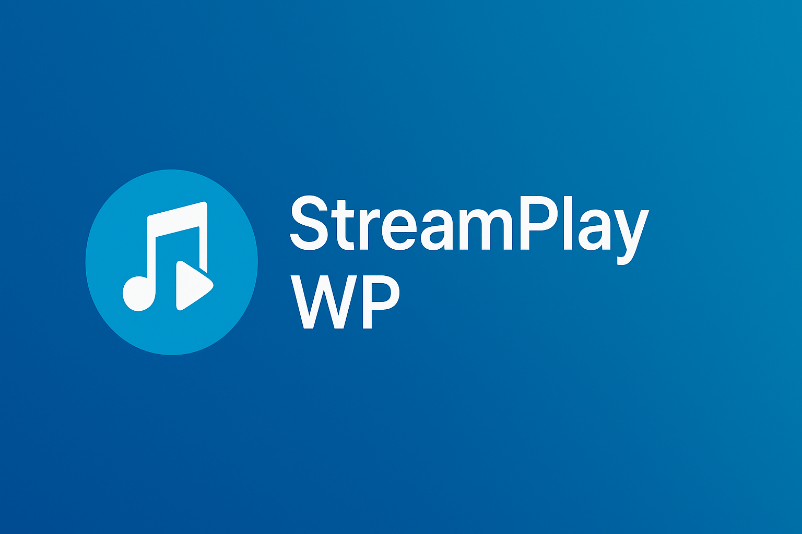
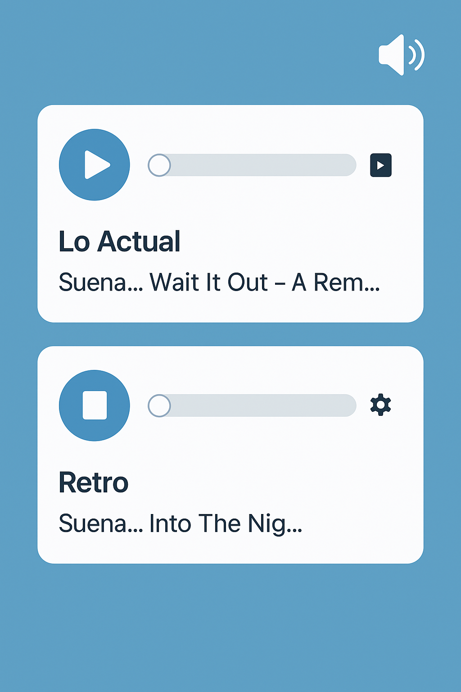
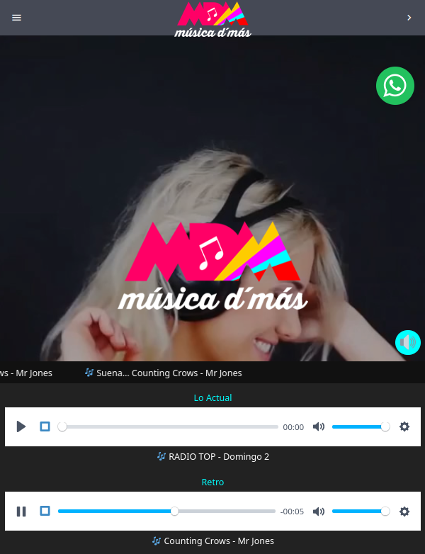

🎵 StreamPlay WP
Bienvenido a la documentación oficial del plugin StreamPlay WP para WordPress.
Este reproductor de audio avanzado permite integrar múltiples transmisiones en vivo con diseño moderno y controles exclusivos gracias a Plyr.js.

Reproductor StreamPlay WP

Implementación real de StreamPlay WP
📦 Última versión: v2.1.9e
- Stop real al cambiar entre streams.
- Reconexión limpia y controlada.
- Visualización dinámica de la canción actual.
- Toggle para ocultar reproductores en mobile.
📚 Documentación
🚀 Instalación
- Subí el
.zip del plugin a WordPress.
- Activá desde el panel de administración.
- Insertá el siguiente shortcode donde quieras que aparezca el reproductor:
php
[streamplay]
🎧 Funcionalidades destacadas
- 🎵 Reproductores modernos con Plyr.js.
- 🛑 Botón Stop integrado.
- 🔄 Reconexión dinámica del stream.
- 📱 Compatible con mobile y desktop.
- 🧠 Sistema de exclusividad entre streams activos.
💬 Soporte
Para soporte o consultas, contactá a Ruben Cardozo.
© 2025 hechoenelsur - Todos los derechos reservados.